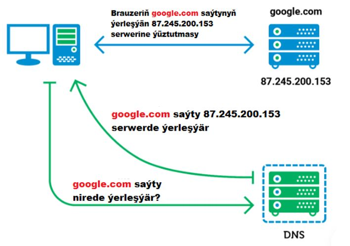
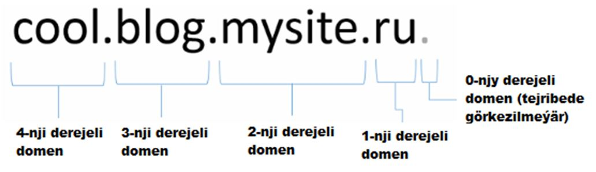
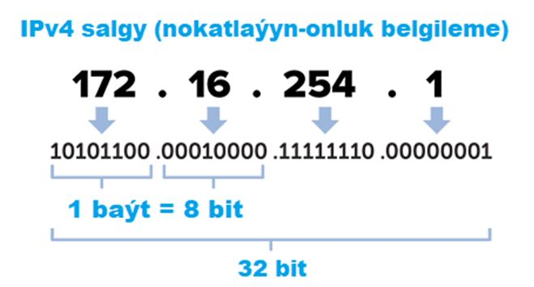

Frontend kämilleşdiriji (frontend developer) web-sahypanyň ulanyjy üçin görünýän (müşderi) tarapyny döredýär we onuň
esasy wezipesi – dizaýneriň döreden dizaýnyny sahyplandyrmakdyr, ýagny web-sahypa öwürmekdir. Frontend hünärmenine
bolan talap gün geçdikçe artýar.
Frontend kämilleşdiriji kim?
Frontend kämilleşdiriji – bu web-sahypalary sahyplandyrmagy başarýan hünärmendir. Birnäçe web-tehnologiýalary (HTML,
CSS), başga-da JavaScript programmalaşdyrma dilini, bir ýa-da birnäçe JavaScript-freýmworklary (React, Angular,
Vue.js, Node.js we ş.m.) oňat derejede bilýän hünärmendir. Frontend kämilleşdiriji esasan web-saýtyň müşderi
tarapyny işläp taýýarlaýar. Frontend kämilleşdirijiniň esasy wezipesi web-saýtyň ýa-da web-goşundynyň ulanyjy
interfeýsiniň funksionallygyny işläp taýýarlamakdyr.
Frontend kämilleşdiriji näme işi ýerine ýetirýär?
Başlangyçda maketa laýyklykda berlen sahypany sahypalandyrýar. Ondan soňra web-sahypanyň funksionallygyny işläp
taýýarlaýar: düwmeleriň işleýiş logikasyny taýýarlaýar, ulanyjy formlaryndaky maglumatlaryň işläp taýýarlanyşyny
başga-da ulanyjy bilen saýtyň içindäki elementleriň özara aragatnaşygyny gurnaýar.
Frontend kämilleşdirijiniň möhüm bilmeli zatlary
Web-sahypany sahypalandyrma dillerini: HTML we CSS;
JavaScript programmalaşdyrma dilini kämil derejede;
CSS öňprosessorlaryndan haýsy hem bolsa birini;
JavaScript freýmworklaryndan we kitaphanalaryndan haýsy hem bolsa birini;
Iň azyndan iňlis dilini orta (intermediate) derejede.
Web-sahypa – bu içinde dürli informasiýalary (tekst, şekil, ses, wideo) saklaýan faýldyr. Adatdça .html giňeltmesine
eýedir. Bir web-sahypadan beýleki web-sahypa gipertekstiň, baglanşygyň kömegi bilen geçip bolýar. Başga-ça aýdylanda
web-sahypalar gipertekstleriň kömegi bilen biri-birine baglanyp bilýärler.
Web-saýt – bu birmeňzeş domen adyna eýe web-sahypalaryň toplumydyr.
Web-brauzer näme?
Web-sahypalaryny görkezmäge kömek edýän ýörite programmalardyr. Mysal üçin: Google Chrome, Firefox, Safari,
Microsoft Edge we ş.m.
1-nji ädim: Web-saýtyň sahypalarynyň maketini çyzmak. Muny adatça Adobe Photoshop we ş.m. programmalaryň kömegi
bilen ýerine ýetirýärler;
2-nji ädim: Çyzylan maketiň esasynda web-sahypalary sahypalandyrmak, ýagny maketi web-sahypa öwürmek. (Ulanylýan
tehnologiýalar: HTML, CSS);
3-nji ädim: Web-ssenariýalary ýazmak – ulanyjynyň hereketlerine görä sahypanyň elementlerinde haýsy hem bolsa
bir amalyň ýerine ýetirilmegi. (Ulanylýan tehnologiýalar: JavaScript);
4-nji ädim: Maglumat bazasynyň strukturasyny işläp taýýarlamak. Maglumat bazasynda saýtyň içki maglumatlary
saklanýar. Meselem, sanawlar, kategoriýalar, aşaky kategoriýalar, makalalar, teswirler, ulanyjylaryň sanawy we
ş.m. Maglumat bazasyny döretmek. (Ulanylýan tehnologiýalar: MySQL, MS SQL, Oracle, MariaDB, PostgreSQL we ş.m.);
5-nji ädim: Web-serwer programmasy (Apache we ş.m.) bilen bilelikde işlejek serwer programmalaryň (.php, .apsx
we ş.m.) ýazylmagy, maglumat bazasyndan maglumatlaryň alynmagy we olaryň web-sahypa görnüşine özgerdilmegi.
Serwer programmalary adatça bekend (backend) kämilleşdiriji tarapyndan ýazylýar. (Ulanylýan tehnologiýalar:
Java, C#, PHP, JavaScript, Python, Ruby, Rust, Go we ş.m.);
6-njy ädim: elýeterlilik çäklendirmesini, jenaýatçylardan goragy we ş.m. amala aşyrýan serwer programmalaryň
ýazylmagy;
7-nji ädim: Web-saýtyň ýa-da web-goşundynyň ýalňyşsyz işleýşini barlamak, test etmek;
Serwer programmalary tarapyndan generirlenmeýän sahypalara statiki web-sahypalar diýilýär. Web-dizaýneriň taýýarlan
maketiniň esasynda Frontend kämilleşdiriji tarapyndan sahypalandyrylýar we faýl görnüşinde serwer kompýuteriň
diskine ýerleşdirilýär. Özara baglanşykly statiki web-sahypalar statiki web-saýty emele getirýär. Statiki saýtlary
döretmeklik aňsat we bahasy arzan, islendik hosting-prowaýder firmasynda neşir etmeklik mümkin. Dinamiki saýtlaryň
müşderi tarapyna degişli sahypalary statiki sahypalar görnüşinde taýýarlanylýar. (Hosting-prowaýder: Internet
torunda saýty neşir etmeklik boýunça hyzmatlary berýän gurama, firma).
Saýta degişli faýllar Internet toruna birikdirilen serwer kompýuteriň diskinde saklanýar. Her bir serwer kompýuteriň
Internet torunda özüniň gaýtalanmaz IP salgysy bolýar. Bu kompýuter saýtyň eýesine ýa-da hosting prowaýder firmasyna
degişli bolup biler we hemişe işjeň ýagdaýda bolmaly. Serwer kompýuteriň içindäki web-serwer programmasy Internet
toruna birikdirilen Müşderi kompýuterleriň ýüztutmalaryna jogap berip durýar. Internet ulanyjysy web-brauzeriň salgy
gutujygyna gerekli saýtyň salgysyny ýazyp Enter klawişasyna basanda arka tarapda birnäçe amal bolup geçýär:
Web-brauzer programmasy salgy gutujygyna girizilen saýtyň salgysyndan domen adyndan bu saýtyň faýllarynyň
(Internet toruna birikdirilen) haýsy kompýuterdedigini anyklaýar, ýagny serwer kompýuteriň IP salgysyny
kesgitleýär we bu kompýuterde işleýän web-serwer programmasyna ýüztutma iberýär. Ýüztutmanyň düzümine saýtyň
salgysy bütinleýin ýerleşdirilýär;
Web-serwer programmasy brauzer tarapyndan iberilen ýüztutmany kabul edýär we bu ýüztutmanyň içindäki internet
salgydan soralýan faýlyň ýoluny çykaryp alýar we bu faýly serwer kompýuteriň içinden tapyp müşderi kompýuterde
işleýän brauzer programmasyna iberýär. Eger-de faýlyň ýolunda görkezilen faýl serwerde ýok bolsa ýa-da haýsam
bolsa bir sebäpden açylmasa, onda web-serwer brauzere ýalňyşlyk sahypasyny iberýär;
Brauzer web-serweriň iberen sahypasyny kabul edip alýar we görkezýär.
Eger-de brauzeriň salgy gutujygyna saýtyň domen ady ýazylman bu saýtyň ýerleşdirilen serweriniň IP salgysy ýazylsa
brauzer programmasy ýene-de şol saýtyň sahypasyny görkezer. Adamlaryň IP salgylary ýat tutmasy kyn bolanlygy üçin
her saýta domen ady berilýär. Haçan-da brauzeriň gutujygyna domen salgyny ýazyp Enter düwmesine basanymyzda ilki
bilen DNS serwere ýüztutma iberilýär, DNS serwer bolsa domen salgynyň IP salgysyny iberýär.

DNS serweriň işleýiş prinsipi
Internetiň domen atlarynyň ulgamy berk iýerarhiki gurluşa eýe. Islendik saýtyň ady haýsy hem bolsa bir (birinji
derejeli) domen zonasyna degişlidir. Mysal üçin, tm, com, org, info we ş.m. Her bir domen zonasynda saýtyň eýesi
tarapyndan saýlanan ada eýe müňlerçe 2-nji derejeli domen atlary bardyr.

Domen adyň iýerarhiki gurluşy
Adatça köplenç 2-nji derejeli domenler ulanylýar. Saýt açmak isleýän adamlar (başga biri tarapyndan öň alynmadyk)
2-nji derejeli domen adyny almasy üçin aýlyk belli bir mukdarda töleg tölemeli bolýar. Tejribede 3-nji derejeli
domenler hem giňden ulanylýar. Beýle domenlere subdomen hem diýilýär. Subdomenler saýtyň dürli bölümlerine
gaýtalanmaz at dakylmak islenende ulanylýar. Meselem, kitaphana.mekdep.tm.
Saýta degişli faýllar Internet toruna birikdirilen serwer kompýuteriň diskinde saklanýar we bu kompýuter saýtyň
eýesine ýa-da hosting prowaýder firmasyna degişli bolup biler we hemişe işjeň ýagdaýda bolmaly diýipdik. Eger-de
saýta köp mukdarda ulanyjy girýän bolsa, serwer kompýuteriň şonça köp resursy ulanylýar. Hosting – bu tölegli hyzmat
bolup onuň düzümine serwer kompýuteriň diskinde saýtyň faýllarynyň saklanjak ýeri we serweriň kuwwatlylygy girýär.
Hosting hyzmatyny berýän firma hosting prowaýder diýip at berilýär. Bu firmalaryň esasy maksady siziň saýtyňyzyň
ulanyjylar üçin 24/7 elýeterli bolmagydyr.
Hosting
Hosting prowaýderler saýty dolandyrmaklyk üçin ýörite dolandyryş panellerini hödürleýärler. Dolandyryş paneliň käbir
mümkinçilikleri aşakdaky ýalydyr:
Dolandyryş panelinde saýtyň eýesi, saýta faýllary ýükläp, pozup bilýär, onuň işjeňligine gözegçilik edip
bilýär;
Dolandyryş panelinde saýtyň elektron poçtasyny dolandyryp bolýar.
Mysal üçin:
http://www.somesite.com:8000/apps/app.php?page=1#chapter2
Protokol – bu müşderi programma bilen serwer programmanyň habarlaşmagyny ýola goýýan buýruklaryň sistemasydyr.
Eger-de internet salgysynda protokol hökmünde http görkezilse, onda web-serwer programmasyna bolan ýüztutma
HTTP (HyperText Transfer Protocol) protokoly boýunça amala aşyrylar. Brauzer bilen web-serwer programmasy
habarlaşmak üçin bu protokoly ulanýar. Salgy gutujygynda protokol görkezilmedik ýagdaýynda hem kabulgörlen
protokol hökmünde bu protokol ulanylar;
Internet salgy – neşir edilen saýtyň adyny ýa-da has dogrusy domen adyny görkezýär. Mysal üçin: www.google.com.
Domen adyň deregine IP salgy hem bolup biler. Mysal üçin: 186.143.27.9. IP salgylar domen atlaryna görä has seýrek
ulanylýar;
Portuň belgisi – bu müşderi programmalaryň biri-birine päsgel bermezden özleriniň serwer programmalary bilen
habarlaşmagyny ýola goýýan wirtual kanaldyr. Portuň belgisi TCP portuň belgisini görkezýär. Serwer programmalaryň
her bir görnüşi özlerine aýrylan TCP porty ulanýar, mysal üçin web-serwer programmasy 80-nji porty ulanýar. Ýöne
käbir sebäplere görä web-serwer programmasy başga porty ulanyp biler. Bu ýagdaýda portuň belgisi internet salgysynda
aýdyň görkezilmeli. Eger-de internet salgysynda port görkezilmese, onda brauzer kabulgörlen TCP port hökmünde 80-nji
porty ulanar;
Faýlyň ýoly – saýt Internet torunda neşir edilende saýtyň faýllary serwer kompýuteriň ýörite kök papkasy atly
papkasyna ýerleşdirilýär. Web-serwer programmasy bu papkany tapmasy üçin onuň sazlamalarynda bu papkanyň ýoly
görkezilýär. Web-serwer programmasy web-salgydaky faýlyň ýoluny ulanyp kök papkadan gerekli faýly gözläp tapýar.
Eger-de faýlyň ýolunda diňe papka bolan ýol görkezilen bolsa, onda web-serwer bu papkanyň içinden kabulgörlen
(default) faýly brauzere iberer. Kabulgörlen faýlyň ady adatça index.html, index.php, default.aspx görnüşde bolmaly.
Eger-de faýlyň ady görkezilmedik ýagdaýynda, onda kök papkadaky kabulgörlen faýl iberiler. Adatça bu iberiljek
sahypa saýtyň baş sahypasydyr;
Get parametr – web-serwere iberilýän maglumatlaryň toplumy;
Labyryň ady – sahypanyň bölegini görkezýär. Brauzer sahypanyň labyrda görkezilen bölegini görkezer.
IP protokolynyň kömegi bilen kompýuter torlaryny bir bitewi bütindünýä toruna birikdirmeklik mümkinçiligi ýüze
çykdy. IP protokoly tora baglanýan her bir enjama gaýtalanmaz adres berýär. IP salga mysal: 186.143.27.9
Internetiň düzümine girýän her bir kompýuter tory bitewi gurluşa ugrukdyryjynyň (routeriň) kömegi bilen
birikdirilýär. Ugrukdyryjy – bu kompýuterleriň IP salgylaryny nazara almaklyk bilen maglumat bukjalaryny
(paketlerini) süzýän (filtrleýän), tertipleşdirýän we täzeden iberýän ýörite apparat we programmalaýyn
gurluşdyr.

IPv4 gurluşy
IP salgy arasy nokat bilen bölünen dört sany (0-255 aralygyndaky) sanlardan ybaratdyr. Eger-de kompýuter açylyp
ýapylandan soňra IP salgy üýtgemeýän bolsa, onda statiki IP, üýtgeýän bolsa, dinamiki IP salgy bolýar. Häzirki
wagtda IPv4 bilen 4 milliard töweregi enjama gaýtalanmaz IP salgysyny berip bolýär we gün geçdigiçe Internet toruna
birikýän enjamlaryň sany artýanlygy üçin IPv4 protokoly ýetersiz hasaplanýar. Şonuň üçin, IPv4 deregine IPv6
protokoly ulanylmaga başlandy. IPv6 protokolynda gaýtalanmaz salgy, arasy iki nokat bilen bölünen iki baýtlyk sekiz
sany onaltylyk sanyň kömegi bilen ýazylýar. IPv6 protokolynda IP salgy üçin 128 bit ulanylýanlygy üçin jemi
3,4×1038 sany salgy alyp bolýar. Aşakda IPv6 salgysyna mysal berlen:
Internetdäki ähli web-saýtlaryň jemine bütindünýä kerebi ýa-da World Wide Web diýilýär. Bütindünýä toruna gysgaça
Web hem diýilýär. Internet torundaky ýüz millionlarça web-serwer programmalary bütindünýä kerebeni emele getirýär.
Bütindünýä kerebiniň ýa-da başga-ça aýtsak Webiň esasy tehnologiýasy gipertekste daýanýar. Gipertekst – bu düzüminde
gipersalgylary saklaýan tekstdir. Gipersalgy – dokumentdäki sözüň ýa-da suratyň başga bir dokument ýa-da şol bir
dokumentiň içindäki başga bir ýer bilen baglanşygydyr. Adatça web-sahypada gipersalgylar başga reňkde bolup aşagy
çyzylan bolýar.